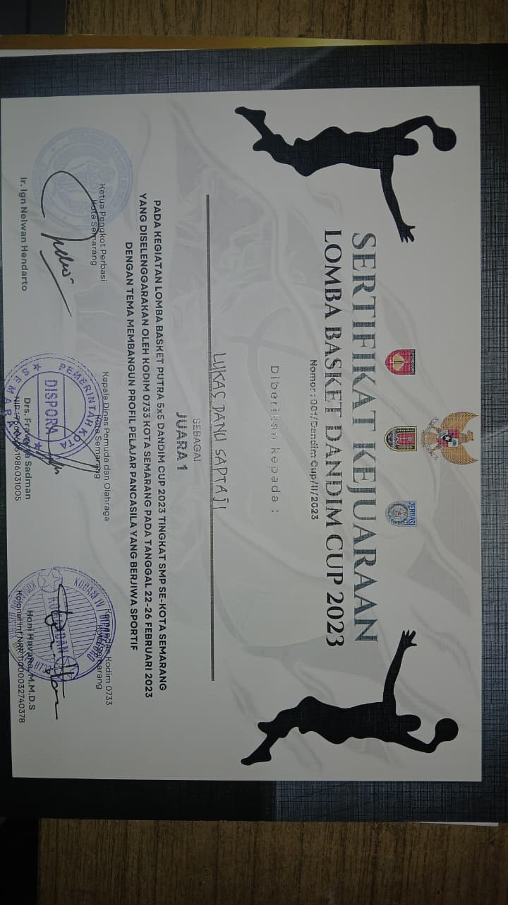
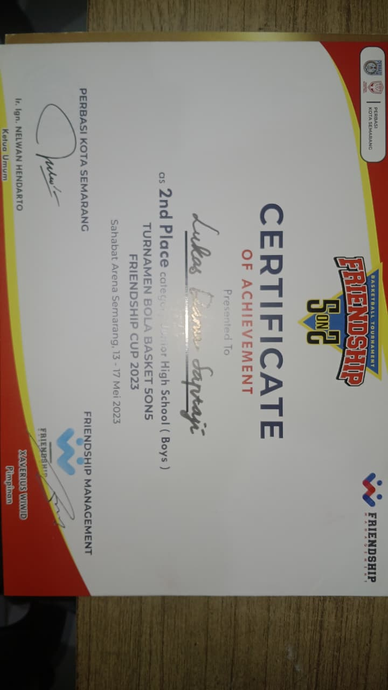
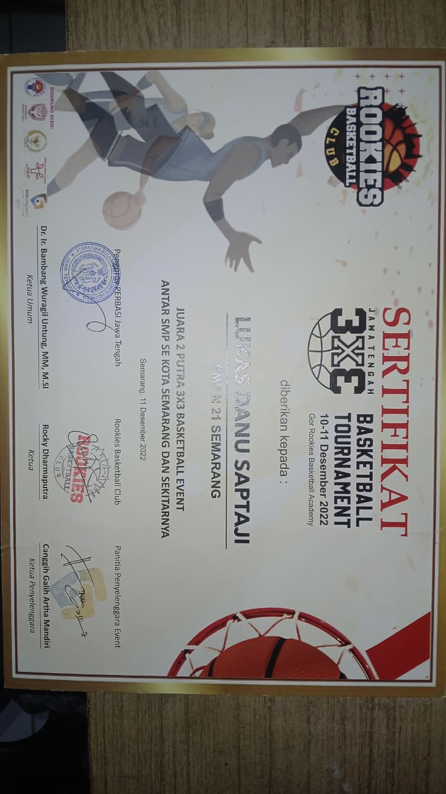
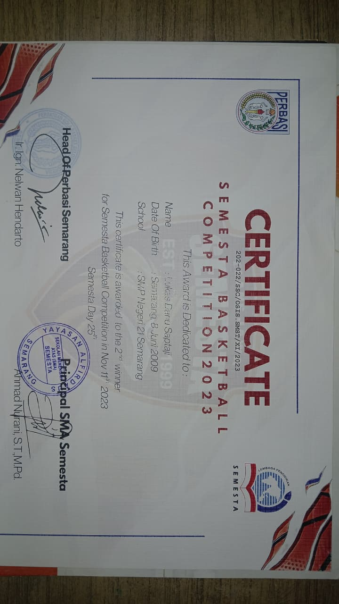
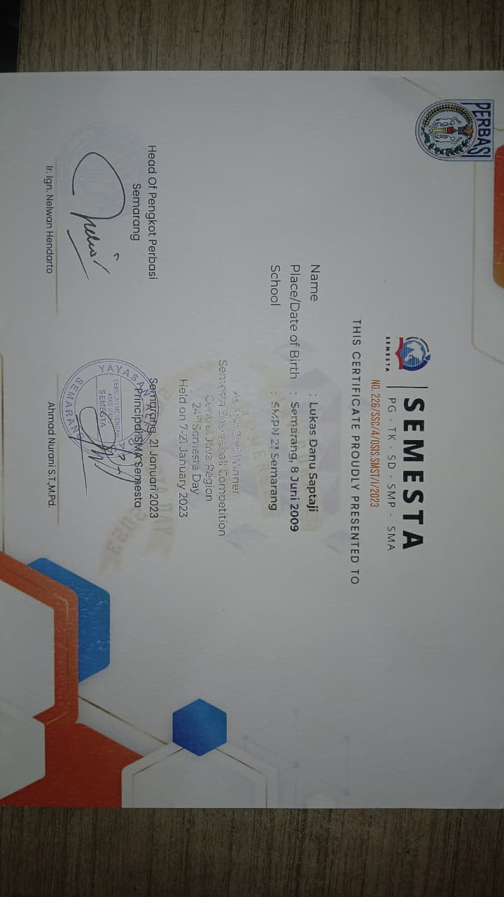

Tentang Saya
Riwayat Keluarga
Saya merupakan anak pertama dari dua bersaudara. Sebagai anak sulung, saya tumbuh dengan rasa tanggung jawab yang besar, baik terhadap diri sendiri maupun terhadap adik saya. Keluarga adalah motivasi utama saya dalam menjalani setiap langkah kehidupan.
Riwayat Pendidikan
Saat ini saya menempuh pendidikan di SMKN 7 Semarang, mengambil jurusan Sistem Informasi Jaringan dan Aplikasi (SIJA). Di jurusan ini, saya mempelajari berbagai ilmu di bidang teknologi informasi, mulai dari jaringan komputer hingga pengembangan aplikasi, yang menjadi bekal penting bagi karier saya di dunia digital.
Cita-cita & Tujuan Karier
Saya memiliki cita-cita untuk berkarier di bidang cyber security. Dunia keamanan siber bagi saya bukan sekadar profesi, melainkan sebuah panggilan untuk turut menjaga keamanan ruang digital. Di balik cita-cita tersebut, terdapat tujuan yang lebih dalam, yaitu membangun kehidupan yang mapan sehingga saya tidak lagi dibebani oleh permasalahan ekonomi. Semua usaha yang saya lakukan hari ini adalah investasi untuk masa depan yang lebih tenang dan sejahtera.
Kelebihan Diri
Dari sisi soft skill, saya adalah pribadi yang konsisten dan disiplin. Kedua nilai ini saya pegang erat karena saya percaya bahwa kesuksesan bukan datang dari bakat semata, melainkan dari kebiasaan yang dibangun setiap hari. Adapun dari sisi hard skill, saya memiliki kemampuan di bidang pemrograman, khususnya HTML, CSS, dan Java. Saya juga memiliki pemahaman dasar dalam bahasa Python dan mulai mendalami dunia cyber security, terutama di area pwn (binary exploitation), yang menjadi bidang yang paling saya minati untuk terus dikembangkan.
Skills & Teknologi
Programming
Menulis kode yang bersih dan efisien
Cyber Security
Mengamankan sistem dan menganalisis celah keamanan
Networking
Memahami infrastruktur jaringan komputer
Portofolio Terpilih








CV & Pengalaman
Pengalaman & Pendidikan
Menempuh pendidikan di jurusan SIJA (Sistem Infomasi, Jaringan dan Aplikasi)
Berpartisipasi dalam kompetisi Capture The Flag dari ARA ITS, mengerjakan challenges di bidang cybersecurity, cryptography, dan binary exploitation.